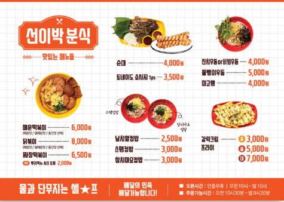
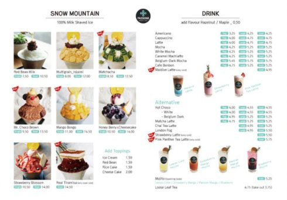

실무 5
상품 사용법 숙지하기
메뉴판을 외우는 일이 아니라, 무엇을 물으면 무엇을 답할지 준비하는 일
학습 목표
- 판매 상품의 사용법과 특성을 익혀 고객의 질문에 정확하게 답할 수 있다.
- 상품 지식을 고객의 상황과 연결해 추천의 근거로 쓸 수 있다.
상품 지식은 세 층으로 준비합니다. ① 무엇인지(원료·온도·사이즈) ② 누구에게 맞는지(취향·상황·제한) ③ 무엇과 어울리는지(함께 사는 조합). 이 세 층이 있어야 “이걸 드세요”가 아니라 “이래서 이걸 권합니다”가 됩니다.
| 구분 | 무엇을 알고 있어야 하는가 |
|---|---|
| 원두 | 산미·바디·고소함이 다른 원두를 구분하고, 디카페인 선택이 가능한지 안내한다. |
| 온도 | HOT / ICE 선택, 얼음 양, 계절 음료의 제공 방식 |
| 카페인 | 카페인에 민감한 손님, 늦은 시간 방문 손님에게 대안을 먼저 제안한다. |
| 알레르기·당도 | 유제품·견과·당도 조절 가능 여부를 확인하고, 확실하지 않으면 확인 후 안내한다. |
| 조합 | 음료와 디저트의 맛·무게 균형, 세트 구성과 가격 |
PPT 원본 화면 · 실무 5메뉴판 사진 2장


📺참고 유튜브 영상
영상은 새 창에서 열립니다. 이 자료실은 영상을 직접 재생하지 않고 링크만 제공합니다.
수업용 기준 가격입니다
아래 메뉴·가격·혜택은 실연평가의 공정성을 위해 수업에서 고정한 기준입니다. 실제 매장 운영 기준과 다를 수 있고, 평가에서는 이 자료를 기준으로 응대합니다.
| 상품 | 가격 | 핵심 특징 | 누구에게 |
|---|---|---|---|
| 아메리카노 | 4,500 | 세 가지 원두 선택, 깔끔한 기본 커피 | 깔끔한 맛, 디저트와 함께 |
| 스페니쉬 연유 라떼 | 5,800 | 달콤한 연유와 에스프레소 | 강한 단맛, 피로 회복 |
| 신촌 커피 | 6,100 | 바닐라빈 풍미의 프리미엄 라떼 | 부드럽고 고급스러운 단맛 |
| 스트로베리 피치 프라페 | 5,800 | 딸기·복숭아의 상큼한 얼음 음료 | 커피를 마시지 못하는 손님 |
| 로얄 밀크티 쉐이크 | 6,300 | 진한 밀크티에 바닐라 아이스크림 | 든든하고 달콤한 음료 |
| 제주 말차 프라페 | 5,800 | 제주산 말차의 쌉싸름함과 달콤함 | 말차·녹차 향을 좋아하는 손님 |
| 오렌지 자몽 주스 | 6,000 | 통과일을 갈아 넣은 생과일주스 | 카페인 없이 신선한 음료 |
| 상품 | 가격 | 특징 |
|---|---|---|
| 스트로베리 초콜릿 생크림 | 6,700 | 생딸기와 초코 생크림, 기념일 수요 |
| 아이스박스 | 6,500 | 마스카포네 크림과 쿠키 층 |
| 티라미수 | 6,500 | 에스프레소 시럽과 마스카포네 |
| 혜택 | 기준 |
|---|---|
| 통신사 제휴 | 멤버십 등급에 따라 수업용 기준 5~15% |
| CJ ONE 포인트 | 적립·사용 안내 |
| 텀블러 | 개인 텀블러 지참 시 음료당 300원 |
| 세트 | 음료+디저트 조합으로 단품보다 합리적 |
| 세트 | 구성 | 가격 | 누구에게 |
|---|---|---|---|
| 시그니처 페어링 | 아메리카노 + 스초생 | 11,200 | 달콤한 디저트와 깔끔한 커피 |
| 당 충전 100% | 스페니쉬 연유 라떼 + 아이스박스 | 12,300 | 기분 전환이 필요한 손님 |
| 상큼 리프레시 | 스트로베리 피치 프라페 + 아이스박스 | 12,300 | 커피를 마시지 않는 손님 |
| 프리미엄 라떼 | 신촌 커피 + 티라미수 | 12,600 | 부드러운 커피와 정통 디저트 |
| 말차 마니아 | 제주 말차 프라페 + 티라미수 | 12,300 | 말차와 고급 디저트 |
| 건강 리프레시 | 오렌지 자몽 주스 + 티라미수 | 12,500 | 카페인 없이 신선한 조합 |